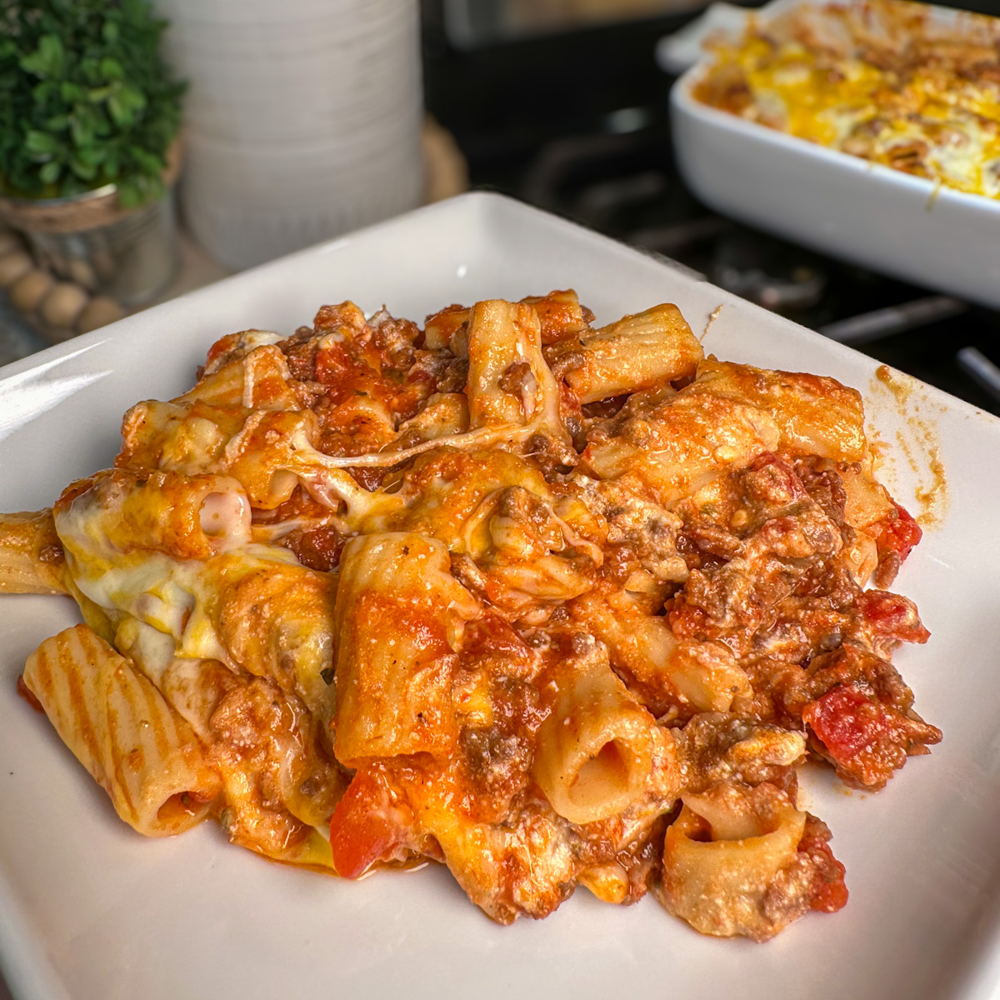

Ziti is a tubular pasta originating from Campania and Sicily in Southern Italy, traditionally known as zita (bride's pasta) because it was served at wedding feasts to symbolize longevity. Historically, this long, smooth, hollow pasta was broken by hand before cooking. It became a beloved, cheesy, baked Italian-American comfort food staple.